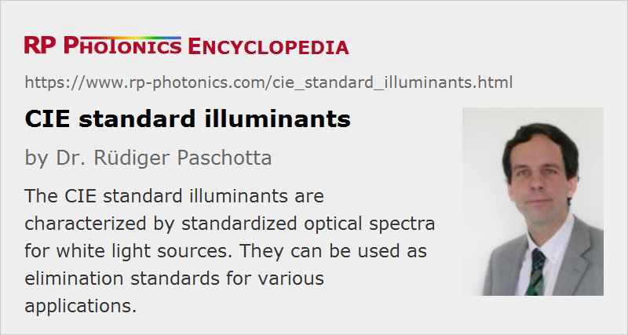

CIE Standard Illuminants
Definition: standardized optical spectra for white light sources
German: CIE-Normlichtarten
Categories: light detection and characterization, vision, displays and imaging
How to cite the article; suggest additional literature
Author: Dr. Rüdiger Paschotta
The CIE (Commission Internationale de l'Éclairage = International Commission on Illumination) has defined various standard illuminants with different types of white light. These can be used as standard light sources both in calculations of colorimetry and in experimental measurements, using real light sources which will approximate those standard illuminants.
Each white illuminant has a certain white point which is not fully characterized by the correlated color temperature alone. For the standard illuminants, chromaticity coordinates in different color spaces are available.
Versions of Standard Illuminants
Standard Illuminant A
Standard illuminant A is closely matched by tungsten incandescent lamps (including halogen lamps) with a color temperature of 2856 K. It thus represents a typical situation with incandescent lighting, although in practice the color temperatures can be significantly lower or higher.
Standard Illuminants B and C
Standard illuminant B approximates daylight at noon with a correlated color temperature of 4874 K. Similarly, standard illuminant C approximates average daylight with a higher color temperature of 6774 K (due to a relatively stronger contribution of the blue sky).
Illuminants B and C were later deprecated in favor of the illuminant series D.
Standard Illuminant D Series
Standard illuminant D series is a more realistic approximation of daylight than the earlier versions B and C, but is more difficult to produce technically. CIE has defined rules for calculating the chromaticity coordinates of illuminant D for different color temperatures. A particularly important version, used as a standard in various circumstances, is illuminant D65 with a correlated color temperature of 6504 K.
Standard Illuminant E
Standard illuminant E has a constant spectral exitance (in terms of Me,λ) throughout the visible spectrum. It leads to chromaticity coordinates of (1/3, 1/3) in CIE XYZ color space. The correlated color temperature is 5455 K.
Standard Illuminant F Series
Standard illuminant series F has been designed to represent fluorescent lamps with various common types of phosphors.
Standard Illuminant LED Series
Similarly, a new series of standard illuminants for LED lighting has been published in 2018, as LED lighting is getting more and more common.
Questions and Comments from Users
Here you can submit questions and comments. As far as they get accepted by the author, they will appear above this paragraph together with the author’s answer. The author will decide on acceptance based on certain criteria. Essentially, the issue must be of sufficiently broad interest.
Please do not enter personal data here; we would otherwise delete it soon. (See also our privacy declaration.) If you wish to receive personal feedback or consultancy from the author, please contact him e.g. via e-mail.
By submitting the information, you give your consent to the potential publication of your inputs on our website according to our rules. (If you later retract your consent, we will delete those inputs.) As your inputs are first reviewed by the author, they may be published with some delay.
See also: white light, white light sources, color temperature, colorimetry
and other articles in the categories light detection and characterization, vision, displays and imaging
|  |
If you like this page, please share the link with your friends and colleagues, e.g. via social media:
These sharing buttons are implemented in a privacy-friendly way!